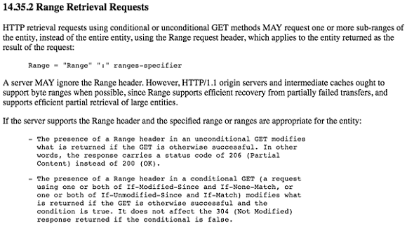
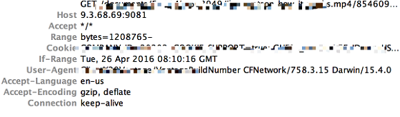
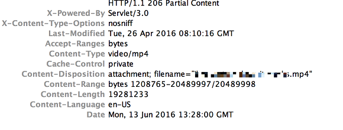
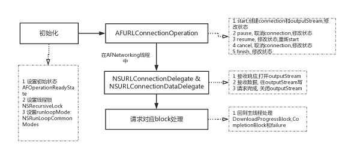
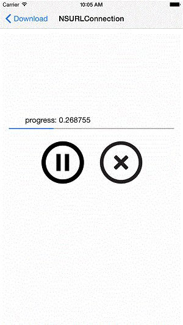
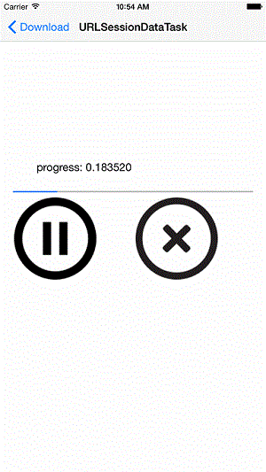
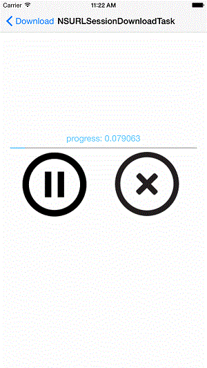

- 邓白氏码 不清楚公司是否申请过,如果没有申请过可能需要半个月左右时间(最快1周)
- 申请企业证书, 现在苹果对国内企业证书申请比较严格最快1周可能需要半个月甚至更久(美国快过圣诞节和元旦了)
使用 Runloop 遇到的问题
首先: swift 与 C 兼容不如 OC
- 生成
CFRunLoopObserverContext比OC艰难好多...
func addRunloopObserver() {
autoreleasepool {
guard let runloop = CFRunLoopGetCurrent() else {return}
let unmanaged = Unmanaged.passRetained(self)
let uptr = unmanaged.toOpaque()
let vptr = UnsafeMutableRawPointer(uptr)
var content = CFRunLoopObserverContext(version: 0, info: vptr, retain: nil, release: nil, copyDescription: nil)
guard let obserber = CFRunLoopObserverCreate(kCFAllocatorDefault, CFRunLoopActivity.beforeWaiting.rawValue, true, Int.max - 999, observerCallbackFunc(), &content) else {return}
CFRunLoopAddObserver(runloop, obserber, CFRunLoopMode.defaultMode)
}
}
注意 content ,真是比OC复杂啊
- 强转也变了...
func observerCallbackFunc() -> CFRunLoopObserverCallBack {
return {(observer, activity, context) -> Void in
guard let context = context else {
return
}
let work = Unmanaged<RunLoopWorker>.fromOpaque(context).takeUnretainedValue()
if work.tasks.count == 0 { return }
var result = false
while result == false && work.tasks.count > 0 {
// 取出任务
if let unit = work.tasks.first,unit.values.count > 0 {
result = unit.values.first!()
work.tasks.removeFirst()
}
}
}
}
collectionView自定义layout
今天,YouTube推荐了一个自定义layout的视频( Custom Collection View Layouts in iOS),看了一下挺简单明了的,而且基本的操作都包含了.
视频地址: Pinterest Basic Layout - Custom Collection View Layouts in iOS - raywenderlich.com
github地址: Pinterest
核心代码:
//
// PinterestLayout.swift
// Pinterest
//
// Created by Tom Ranalli on 12/25/16.
// Copyright © 2016 Razeware LLC. All rights reserved.
//
import UIKit
// MARK: - Protocols
protocol PinterestLayoutDelegate {
// Request height of photo
func collectionView(_ collectionView:UICollectionView, heightForPhotoAtIndexPath indexPath:NSIndexPath,
withWidth:CGFloat) -> CGFloat
// Request annotation for photo
func collectionView(_ collectionView: UICollectionView,
heightForAnnotationAtIndexPath indexPath: NSIndexPath, withWidth width: CGFloat) -> CGFloat
}
class PinterestLayoutAttributes: UICollectionViewLayoutAttributes {
// This declares the photoHeight property that the cell will use to resize its image view
var photoHeight: CGFloat = 0.0
/* This overrides copy(_with:)
Subclasses of UICollectionViewLayoutAttributes need to conform to the NSCopying protocol
because the attribute’s objects can be copied internally. You override this method to
guarantee that the photoHeight property is set when the object is copied.
*/
override func copy(with zone: NSZone? = nil) -> Any {
let copy = super.copy(with: zone) as! PinterestLayoutAttributes
copy.photoHeight = photoHeight
return copy
}
/* This overrides isEqual(_:), and it’s mandatory as well.
The collection view determines whether the attributes have changed by comparing the old
and new attribute objects using isEqual(_:). You must implement it to compare the custom
properties of your subclass. The code compares the photoHeight of both instances, and
if they are equal, calls super to determine if the inherited attributes are the same;
if the photo heights are different, it returns false
*/
override func isEqual(_ object: Any?) -> Bool {
if let attributes = object as? PinterestLayoutAttributes {
if( attributes.photoHeight == photoHeight ) {
return super.isEqual(object)
}
}
return false
}
}
// MARK: - Class definition
class PinterestLayout: UICollectionViewLayout {
// MARK: - Properties
// Keep reference to the delegate
var delegate: PinterestLayoutDelegate!
// Configure number of columns and cell padding
var numberOfColumns = 2
var cellPadding: CGFloat = 6.0
// This is an array to cache the calculated attributes.
/* When you call prepareLayout(), you’ll calculate the attributes for all items and add them to the cache. When the collection view later requests the layout attributes, you can be efficient and query the cache instead of recalculating them every time
*/
private var cache = [PinterestLayoutAttributes]()
// This declares two properties to store the content size.
// contentHeight is incremented as photos are added
private var contentHeight: CGFloat = 0.0
// contentWidth is calculated based on the collection view width and its content inset.
private var contentWidth: CGFloat {
let insets = collectionView!.contentInset
return collectionView!.bounds.width - (insets.left + insets.right)
}
// Variable overrides
/* This overrides collectionViewContentSize variable of the abstract parent class, and returns the size of the collection view’s contents. To do this, you use both contentWidth and contentHeight calculated in the previous steps.
*/
override var collectionViewContentSize: CGSize {
return CGSize(width: contentWidth, height: contentHeight)
}
/* This overrides layoutAttributesClass variable to tell the collection view to use PinterestLayoutAttributes whenever it creates layout attributes objects.
*/
override class var layoutAttributesClass: AnyClass {
return PinterestLayoutAttributes.self
}
// MARK: - Overrides
override func prepare() {
// Only calculate if cache is empty
if cache.isEmpty {
/* This declares and fills the xOffset array with the x-coordinate for every column based on the column widths.
*/
let columnWidth = contentWidth / CGFloat(numberOfColumns)
var xOffset = [CGFloat]()
for column in 0 ..< numberOfColumns {
xOffset.append(CGFloat(column) * columnWidth )
}
/* The yOffset array tracks the y-position for every column. You initialize each value in yOffset to 0, since this is the offset of the first item in each column.
*/
var column = 0
var yOffset = [CGFloat](repeating: 0, count: numberOfColumns)
// This loops through all the items in the first section, as this particular
// layout has only one section
for item in 0 ..< collectionView!.numberOfItems(inSection: 0) {
let indexPath = NSIndexPath(item: item, section: 0)
// This is where you perform the frame calculation
// Width is the previously calculated cellWidth, with the padding between cells removed
let width = columnWidth - cellPadding * 2
// You ask the delegate for the height of the image
let photoHeight = delegate.collectionView(collectionView!,
heightForPhotoAtIndexPath: indexPath,
withWidth:width)
// You ask the delegate for the height of the annotation
let annotationHeight = delegate.collectionView(collectionView!,
heightForAnnotationAtIndexPath: indexPath,
withWidth: width)
// Calculate the frame height based on those heights and the predefined cellPadding
// for the top and bottom
let height = cellPadding + photoHeight + annotationHeight + cellPadding
// Combine this with the x and y offsets of the current column to create the
// insetFrame used by the attribute
let frame = CGRect(x: xOffset[column], y: yOffset[column], width: columnWidth, height: height)
let insetFrame = frame.insetBy(dx: cellPadding, dy: cellPadding)
// This creates an instance of PinterestLayoutAttributes
let attributes = PinterestLayoutAttributes(forCellWith: indexPath as IndexPath)
attributes.photoHeight = photoHeight
// Sets its frame using insetFrame
attributes.frame = insetFrame
// Append the attributes to cache
cache.append(attributes)
// This expands contentHeight to account for the frame of the newly calculated item
contentHeight = max(contentHeight, frame.maxY)
// It then advances the yOffset for the current column based on the frame
yOffset[column] = yOffset[column] + height
// Finally, it advances the column so that the next item will be placed in the next column.
if column >= numberOfColumns - 1 {
column = 0
} else {
column = column + 1
}
}
}
}
override func layoutAttributesForElements(in rect: CGRect) -> [UICollectionViewLayoutAttributes]? {
var layoutAttributes = [UICollectionViewLayoutAttributes]()
// Iterate through the attributes in cache and check if their frames intersect with rect
for attributes in cache {
if attributes.frame.intersects(rect) {
layoutAttributes.append(attributes) // Add in any attributes for display
}
}
return layoutAttributes
}
}
比较有意思的一个计算高度方式:
// This provides the height of the photos
/* It uses AVMakeRectWithAspectRatioInsideRect() from AVFoundation to calculate a height that retains the photo’s aspect ratio, restricted to the cell’s width.
*/
func collectionView(_ collectionView:UICollectionView,
heightForPhotoAtIndexPath indexPath: NSIndexPath,
withWidth width: CGFloat) -> CGFloat {
let photo = photos[indexPath.item]
let boundingRect = CGRect(x: 0, y: 0, width: width, height: CGFloat(MAXFLOAT))
let rect = AVMakeRect(aspectRatio: photo.image.size, insideRect: boundingRect)
return rect.size.height
}
图片解压:
extension UIImage {
var decompressedImage: UIImage {
UIGraphicsBeginImageContextWithOptions(size, true, 0)
draw(at: CGPoint.zero)
let decompressedImage = UIGraphicsGetImageFromCurrentImageContext()
UIGraphicsEndImageContext()
return decompressedImage!
}
}
一个从前没有用过的Api:
/*
This code calls the super implementation to make sure that the standard attributes are applied. Then, it casts the attributes object into an instance of PinterestLayoutAttributes to obtain the photo height and then changes the image view height by setting the imageViewHeightLayoutConstraint constant value.
*/
override func apply(_ layoutAttributes: UICollectionViewLayoutAttributes) {
super.apply(layoutAttributes)
if let attributes = layoutAttributes as? PinterestLayoutAttributes {
imageViewHeightLayoutConstraint.constant = attributes.photoHeight
}
}
===========完=========
[转]浅析 iOS 应用开发中的断点续传
断点续传概述
断点续传就是从文件上次中断的地方开始重新下载或上传数据，而不是从文件开头。（本文的断点续传仅涉及下载，上传不在讨论之内）当下载大文件的时候，如果没有实现断点续传功能，那么每次出现异常或者用户主动的暂停，都会去重头下载，这样很浪费时间。所以项目中要实现大文件下载，断点续传功能就必不可少了。当然，断点续传有一种特殊的情况，就是 iOS 应用被用户 kill 掉或者应用 crash，要实现应用重启之后的断点续传。这种特殊情况是本文要解决的问题。
断点续传原理
要实现断点续传 , 服务器必须支持。目前最常见的是两种方式：FTP 和 HTTP。下面来简单介绍 HTTP 断点续传的原理。
HTTP
通过 HTTP，可以非常方便的实现断点续传。断点续传主要依赖于 HTTP 头部定义的 Range 来完成。具体 Range 的说明参见 RFC2616中 14.35.2 节，在请求某范围内的资源时，可以更有效地对大资源发出请求或从传输错误中恢复下载。有了 Range，应用可以通过 HTTP 请求曾经获取失败的资源的某一个返回或者是部分，来恢复下载该资源。当然并不是所有的服务器都支持 Range，但大多数服务器是可以的。Range 是以字节计算的，请求的时候不必给出结尾字节数，因为请求方并不一定知道资源的大小。Range 的定义如图 1 所示：
图 1. HTTP-Range

图 2 展示了 HTTP request 的头部信息：
图 2. HTTP request 例子

在上面的例子中的“Range: bytes=1208765-”表示请求资源开头 1208765 字节之后的部分。
图 3 展示了 HTTP response 的头部信息：
图 3. HTTP response 例子

上面例子中的”Accept-Ranges: bytes”表示服务器端接受请求资源的某一个范围，并允许对指定资源进行字节类型访问。”Content-Range: bytes 1208765-20489997/20489998”说明了返回提供了请求资源所在的原始实体内的位置，还给出了整个资源的长度。这里需要注意的是 HTTP return code 是 206 而不是 200。
断点续传分析 -AFHTTPRequestOperation
了解了断点续传的原理之后，我们就可以动手来实现 iOS 应用中的断点续传了。由于笔者项目的资源都是部署在 HTTP 服务器上 , 所以断点续传功能也是基于 HTTP 实现的。首先来看下第三方网络框架 AFNetworking 中提供的实现。清单 1 示例代码是用来实现断点续传部分的代码：
清单 1. 使用 AFHTTPRequestOperation 实现断点续传的代码
// 1 指定下载文件地址 URLString
// 2 获取保存的文件路径 filePath
// 3 创建 NSURLRequest
NSURLRequest *request = [NSURLRequest requestWithURL:[NSURL URLWithString:URLString]];
unsigned long long downloadedBytes = 0;
if ([[NSFileManager defaultManager] fileExistsAtPath:filePath]) {
// 3.1 若之前下载过 , 则在 HTTP 请求头部加入 Range
// 获取已下载文件的 size
downloadedBytes = [self fileSizeForPath:filePath];
// 验证是否下载过文件
if (downloadedBytes > 0) {
// 若下载过 , 断点续传的时候修改 HTTP 头部部分的 Range
NSMutableURLRequest *mutableURLRequest = [request mutableCopy];
NSString *requestRange =
[NSString stringWithFormat:@"bytes=%llu-", downloadedBytes];
[mutableURLRequest setValue:requestRange forHTTPHeaderField:@"Range"];
request = mutableURLRequest;
}
}
// 4 创建 AFHTTPRequestOperation
AFHTTPRequestOperation *operation
= [[AFHTTPRequestOperation alloc] initWithRequest:request];
// 5 设置操作输出流 , 保存在第 2 步的文件中
operation.outputStream = [NSOutputStream
outputStreamToFileAtPath:filePath append:YES];
// 6 设置下载进度处理 block
[operation setDownloadProgressBlock:^(NSUInteger bytesRead,
long long totalBytesRead, long long totalBytesExpectedToRead) {
// bytesRead 当前读取的字节数
// totalBytesRead 读取的总字节数 , 包含断点续传之前的
// totalBytesExpectedToRead 文件总大小
}];
// 7 设置 success 和 failure 处理 block
[operation setCompletionBlockWithSuccess:^(AFHTTPRequestOperation
*operation, id responseObject) {
} failure:^(AFHTTPRequestOperation *operation, NSError *error) {
}];
// 8 启动 operation
[operation start];
使用以上代码 , 断点续传功能就实现了，应用重新启动或者出现异常情况下 , 都可以基于已经下载的部分开始继续下载。关键的地方就是把已经下载的数据持久化。接下来简单看下 AFHTTPRequestOperation 是怎么实现的。通过查看源码 , 我们发现 AFHTTPRequestOperation 继承自 AFURLConnectionOperation , 而 AFURLConnectionOperation 实现了 NSURLConnectionDataDelegate 协议。处理流程如图 4 所示：
图 4. AFURLHTTPrequestOperation 处理流程

这里 AFNetworking 为什么采取子线程调异步接口的方式 , 是因为直接在主线程调用异步接口 , 会有一个 Runloop 的问题。当主线程调用 [[NSURLConnection alloc] initWithRequest:request delegate:self startImmediately:YES] 时 , 请求发出之后的监听任务会加入到主线程的 Runloop 中 ,RunloopMode 默认为 NSDefaultRunLoopMode, 这个表示只有当前线程的 Runloop 处理 NSDefaultRunLoopMode 时，这个任务才会被执行。而当用户在滚动 TableView 和 ScrollView 的时候，主线程的 Runloop 处于 NSEventTrackingRunLoop 模式下，就不会执行 NSDefaultRunLoopMode 的任务。
另外由于采取子线程调用接口的方式 , 所以这边的 DownloadProgressBlock,success 和 failure Block 都需要回到主线程来处理。
断点续传实战
了解了原理和 AFHTTPRequestOperation 的例子之后 , 来看下实现断点续传的三种方式：
NSURLConnection
基于 NSURLConnection 实现断点续传 , 关键是满足 NSURLConnectionDataDelegate 协议，主要实现了如下三个方法：
清单 2. NSURLConnection 的实现
// SWIFT
// 请求失败处理
func connection(connection: NSURLConnection,
didFailWithError error: NSError) {
self.failureHandler(error: error)
}
// 接收到服务器响应是调用
func connection(connection: NSURLConnection,
didReceiveResponse response: NSURLResponse) {
if self.totalLength != 0 {
return
}
self.writeHandle = NSFileHandle(forWritingAtPath:
FileManager.instance.cacheFilePath(self.fileName!))
self.totalLength = response.expectedContentLength + self.currentLength
}
// 当服务器返回实体数据是调用
func connection(connection: NSURLConnection, didReceiveData data: NSData) {
let length = data.length
// move to the end of file
self.writeHandle.seekToEndOfFile()
// write data to sanbox
self.writeHandle.writeData(data)
// calculate data length
self.currentLength = self.currentLength + length
print("currentLength\(self.currentLength)-totalLength\(self.totalLength)")
if (self.downloadProgressHandler != nil) {
self.downloadProgressHandler(bytes: length, totalBytes:
self.currentLength, totalBytesExpected: self.totalLength)
}
}
// 下载完毕后调用
func connectionDidFinishLoading(connection: NSURLConnection) {
self.currentLength = 0
self.totalLength = 0
//close write handle
self.writeHandle.closeFile()
self.writeHandle = nil
let cacheFilePath = FileManager.instance.cacheFilePath(self.fileName!)
let documenFilePath = FileManager.instance.documentFilePath(self.fileName!)
do {
try FileManager.instance.moveItemAtPath(cacheFilePath, toPath: documenFilePath)
} catch let e as NSError {
print("Error occurred when to move file: \(e)")
}
self.successHandler(responseObject:fileName!)
}
如图 5 所示 , 说明了 NSURLConnection 的一般处理流程。（代码详见下载包）
图 5. NSURLConnection 流程

根据图 5 的一般流程，在 didReceiveResponse 中初始化 fileHandler, 在 didReceiveData 中 , 将接收到的数据持久化的文件中 , 在 connectionDidFinishLoading 中，清空数据和关闭 fileHandler，并将文件保存到 Document 目录下。所以当请求出现异常或应用被用户杀掉，都可以通过持久化的中间文件来断点续传。初始化 NSURLConnection 的时候要注意设置 scheduleInRunLoop 为 NSRunLoopCommonModes，不然就会出现进度条 UI 无法更新的现象。实现效果如图 6 所示：
图 6. NSURLConnection 演示

NSURLSessionDataTask
苹果在 iOS7 开始，推出了一个新的类 NSURLSession, 它具备了 NSURLConnection 所具备的方法，并且更强大。由于通过 NSURLConnection 从 2015 年开始被弃用了，所以读者推荐基于 NSURLSession 去实现续传。NSURLConnection 和 NSURLSession delegate 方法的映射关系 , 如图 7 所示。所以关键是要满足 NSURLSessionDataDelegate 和 NSURLsessionTaskDelegate。
图 7. 协议之间映射关系

代码如清单 3 所示 , 基本和 NSURLConnection 实现的一样。
清单 3. NSURLSessionDataTask 的实现
// SWIFT
// 接收数据
func URLSession(session: NSURLSession, dataTask: NSURLSessionDataTask,
idReceiveData data: NSData) {
//. . .
}
// 接收服务器响应
func URLSession(session: NSURLSession, dataTask: NSURLSessionDataTask,
didReceiveResponse response: NSURLResponse, completionHandler:
(NSURLSessionResponseDisposition) -> Void) {
// . . .
completionHandler(.Allow)
}
// 请求完成
func URLSession(session: NSURLSession, task: NSURLSessionTask,
didCompleteWithError error: NSError?) {
if error == nil {
// . . .
self.successHandler(responseObject:self.fileName!)
} else {
self.failureHandler(error:error!)
}
}
区别在与 didComleteWithError, 它将 NSURLConnection 中的 connection:didFailWithError:
和 connectionDidFinishLoading: 整合到了一起 , 所以这边要根据 error 区分执行成功的 Block 和失败的 Block。实现效果如图 8 所示：
图 8. NSURLSessionDataTask 演示

NSURLSessionDownTask
最后来看下 NSURLSession 中用来下载的类 NSURLSessionDownloadTask，对应的协议是 NSURLSessionDownloadDelegate，如图 9 所示：
图 9. NSURLSessionDownloadDelegate 协议

其中在退出 didFinishDownloadingToURL 后，会自动删除 temp 目录下对应的文件。所以有关文件操作必须要在这个方法里面处理。之前笔者曾想找到这个 tmp 文件 , 基于这个文件做断点续传 , 无奈一直找不到这个文件的路径。等以后 SWIFT 公布 NSURLSession 的源码之后，兴许会有方法找到。基于 NSURLSessionDownloadTask 来实现的话 , 需要在 cancelByProducingResumeData 中保存已经下载的数据。进度通知就非常简单了，直接在 URLSession:downloadTask:didWriteData:totalBytesWritten:totalBytesWritten:totalBytesExpectedToWrite: 实现即可。代码如清单 4 所示：
清单 4. NSURLSessionDownloadTask 的实现
//SWIFT
//UI 触发 pause
func pause(){
self.downloadTask?.cancelByProducingResumeData({data -> Void in
if data != nil {
data!.writeToFile(FileManager.instance.cacheFilePath(self.fileName!),
atomically: false)
}
})
self.downloadTask = nil
}
// MARK: - NSURLSessionDownloadDelegate
func URLSession(session: NSURLSession, downloadTask:
NSURLSessionDownloadTask, didWriteData bytesWritten: Int64,
totalBytesWritten: Int64, totalBytesExpectedToWrite: Int64) {
if (self.downloadProgressHandler != nil) {
self.downloadProgressHandler(bytes: Int(bytesWritten),
totalBytes: totalBytesWritten, totalBytesExpected: totalBytesExpectedToWrite)
}
}
func URLSession(session: NSURLSession, task: NSURLSessionTask,
didCompleteWithError error: NSError?) {
if error != nil {//real error
self.failureHandler(error:error!)
}
}
func URLSession(session: NSURLSession, downloadTask: NSURLSessionDownloadTask,
didFinishDownloadingToURL location: NSURL) {
let cacheFilePath = FileManager.instance.cacheFilePath(self.fileName!)
let documenFilePath = FileManager.instance.documentFilePath(self.fileName!)
do {
if FileManager.instance.fileExistsAtPath(cacheFilePath){
try FileManager.instance.removeItemAtPath(cacheFilePath)
}
try FileManager.instance.moveItemAtPath(location.path!, toPath: documenFilePath)
} catch let e as NSError {
print("Error occurred when to move file: \(e)")
}
self.successHandler(responseObject:documenFilePath)
}
实现效果如图 10 所示：
图 10. NSURLSessionDownloadTask 演示

总结
本文从断点续传概述开始，介绍了断点续传的应用背景，通过原理的描述，相信读者对断点续传有了基本的认识和理解。接着笔者介绍了通过 AFHTTPRequestOpeartion 实现的代码，并对 AFHTTPRequestOpeartion 做了简单的分析。最后笔者结合的实际需求，基于 NSURLConnection, NSURLSeesionDataTask 和 NSURLSessionDownloadtask。其实，下载的实现远不止这些内容，本文只介绍了简单的使用。希望在进一步的学习和应用中能继续与大家分享。
相关主题
- 参考 RFC959，了解 FTP 协议文本的说明。
- 参考 RFC2616，了解 HTTP 的说明。
- 参考 AFHTTPRequestOperation, 了解源码。
- 参考 iOSDeveloperLibrary，了解 Apple 官方文档对 NSURLConnection, NSURLSeesionDownloadTask 和 NSURLSeesionDataTask 的说明。
- 访问 developerWorks Mobile 专区，了解关于信息管理的更多信息，获取技术文档、how-to 文章、培训、下载、产品信息以及其他资源。
优化iPad 2 总结
实施反馈项目在iPad 2上比较卡顿,所以要对项目进行优化.
优化集中点为collectionView
项目有两种显示效果,一种是图片模式,一种是纯文字模式. 纯文字模式滑动起来还不错,图片模式就比较卡了.经分析,项目做了部分修改,使滑动效果比较顺畅.
- 栅格化: 目的是离屏渲染,不过还是卡顿
self.layer.shouldRasterize = true
self.layer.rasterizationScale = UIScreen.main.scale
self.layer.drawsAsynchronously = true
- Color Blended Layers 处理
 发现部分UILabel存在问题,解决方案:
发现部分UILabel存在问题,解决方案:

添加 label.layer.masksToBounds = true,效果还是不行.
- 使用iOS最新的API
UICollectionViewDataSourcePrefetching
extension DishesViewController: UICollectionViewDataSourcePrefetching {
func collectionView(_ collectionView: UICollectionView, prefetchItemsAt indexPaths: [IndexPath]) {
let urls = indexPaths.flatMap { (index) -> URL? in
let big = dishsArray[index.section]
let key = big.keys.first!
let small = big[key]!
let item = small[index.item]
return URL(string: item.dishModel.smallImageUrl)
}
ImagePrefetcher(urls: urls).start()
}
}
- 上面优化后效果不是很明显,最后采取了以空间换时间的方式优化图片列表页
提前用Kingfisher下载图片(这个过程原先就有)下载过图片也做了不再下载的处理,由于图片过多导致不会有太多列表页的图片缓存中内存中. 针对这个问题,我采用了每次进入app就把列表页的图片使用NSCache<NSString, UIImage>缓存起来,效果很明显.
目前还存在问题
下载图片失败率还是很高的,我设置的超时时间为60s downloader.downloadTimeout = 60 但是还是有很多图片下载超时,导致首次加载的时候需要下载图片滑动卡顿.
由于NSCache的特殊性,不能保证图片一直在内存中,正在考虑是否替换成Dictionary,然后自己处理内存警告.这个稍后验证下.